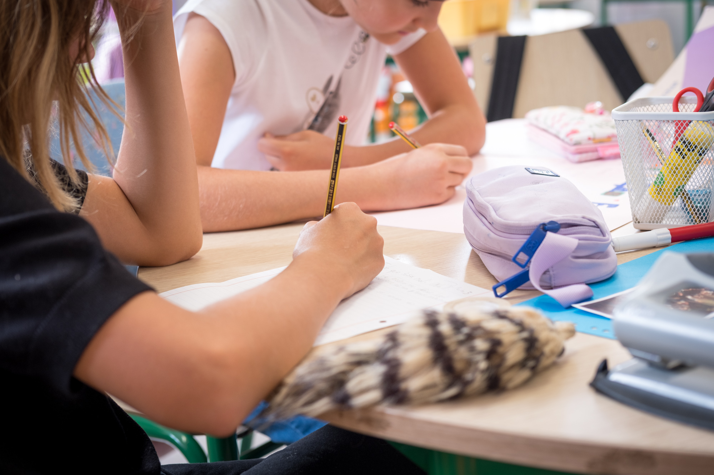
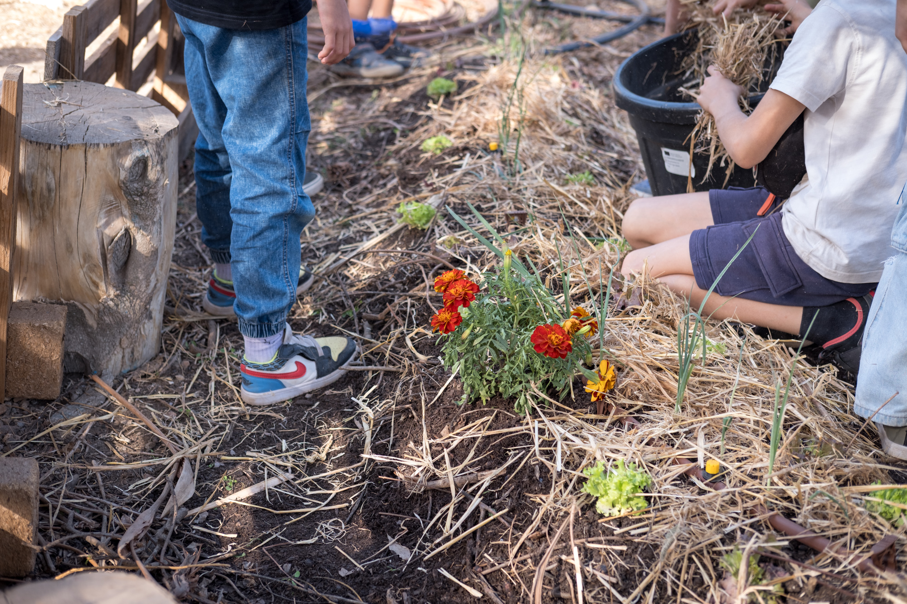

A Conscious Way of Learning.
Rigour lies in the way we organise, support, and assess.
Relationships as the Starting Point
We believe that learning begins with the way a child is seen, listened to, and supported. Relationships are the foundation upon which autonomy, responsibility, and critical thinking are built.
Principles that guide pedagogical decisions in the school’s daily practice
Holistic Education
Learning involves thought, emotion, the body, and our relationship with the world.
Meaningful Learning
Knowledge emerges from relationships and experience, is consolidated through method and structure, and gains the necessary depth through continuity.
Close Support
We observe, record, and reflect on each child’s journey, involving the child and their family continuously and regularly.
Rigour Through Structure
Our rigour comes from the structure we provide: clear objectives, consistent organisation, effective tools for monitoring progress, and a clear learning pathway.
How We Organise Learning
Learning takes place within a clear and consistent educational structure that combines independent work, peer collaboration, and whole-group sessions for sharing, teaching, and consolidating learning.
Work Organisation
Independent work or guided choice
Cooperative work in small and whole groups
Whole-group sessions for sharing, teaching, and consolidating learning
Learning and Assessment Tools
Individual work plan
Class council
Interdisciplinary projects
Records and reflection on each student’s progress
Practice materials to consolidate learning;
Assessment sheets to check learning.
How We Monitor and Assess Learning
Assessment is part of the learning process and supports each stage of the journey. We observe, record, and reflect with children on what they are learning and developing, adjusting our approach whenever necessary.
We use different forms of assessment and monitoring, appropriate to each age group, allowing learning to be consolidated consistently without reducing assessment to isolated moments.
We focus on the learning process, not just the outcome.

Curriculum and Official Framework
CRIAR follows the Portuguese national curriculum, developing its educational approach in alignment with the Guidelines and Essential Learning defined by the Ministry of Education.
We ensure consistent academic progression at each stage, integrating the curriculum content into our own educational structure, which prioritises understanding, method, and the application of knowledge.
References and Inspirations
CRIAR’s educational approach draws on references such as the Modern School Movement (MEM) and, in Preschool, in addition to MEM, principles of the HighScope approach.
From MEM, we value the cooperative organisation of learning, tools that support participation, and the progressive development of students’ sense of responsibility. From HighScope, we incorporate the importance of a consistent routine, guided choice, and active learning in the early stages of the educational journey.
We work with mixed-age groups, promoting cooperation between children of different ages and stages of development. This approach encourages mutual support, responsibility, and respect for different paces, enriching the learning experience.
These references are integrated into our own practice, shaped by the continuous observation of the children and the specific context of the school.

A School Built as a Community
Learning is a shared process.
At CRIAR, each member of the community has a clear role:
- Children: Take part in organising everyday life, propose projects, collaborate with one another, and share what they learn with the group.
- Families: Follow their children’s educational journey, take part in school meetings and activities, and contribute to building consistency between home and school.
- Team: Observe, plan, and continuously adapt our educational practice, ensuring consistency, attentive listening, and close support.
Would You Like to Get to Know CRIAR at Your Own Pace?
We are available to talk or welcome you for a visit.